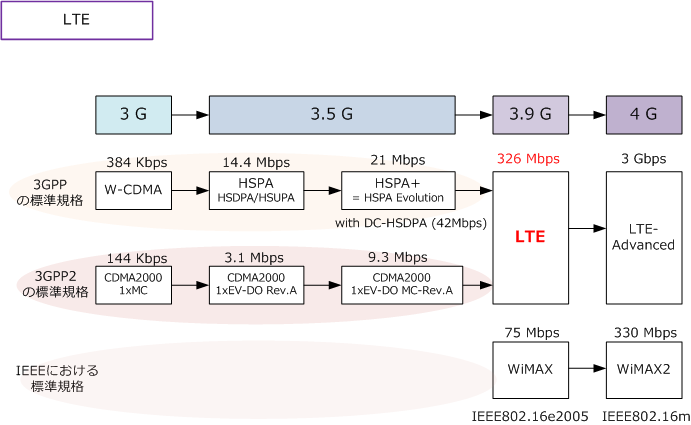
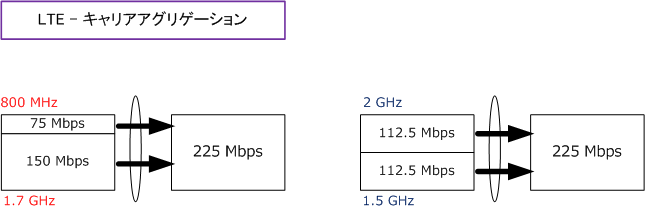
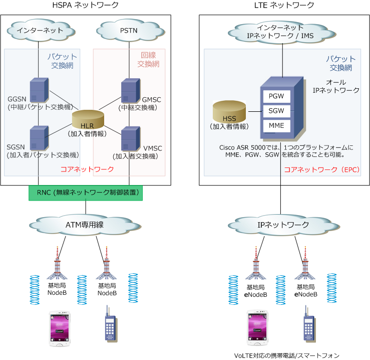
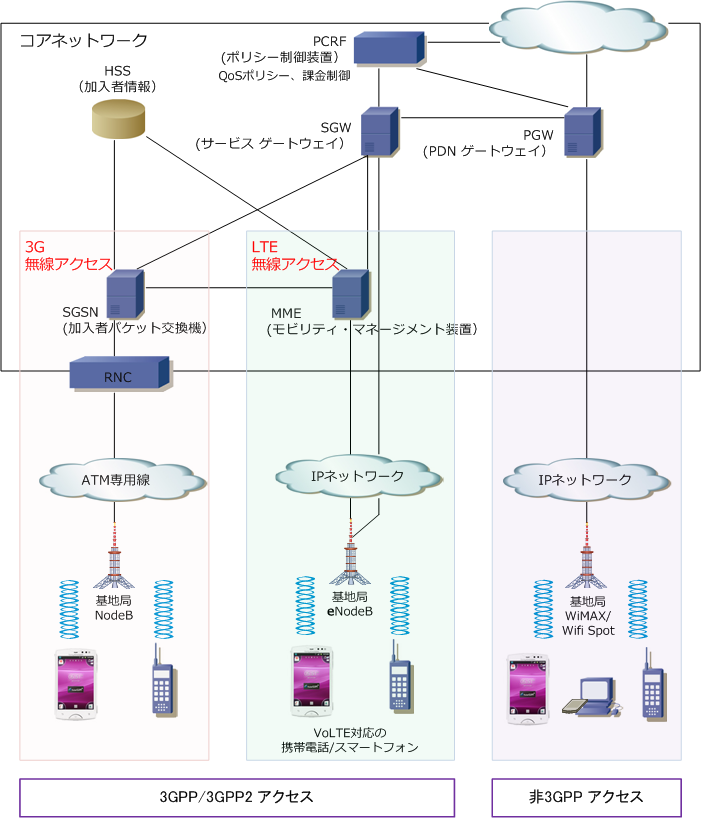
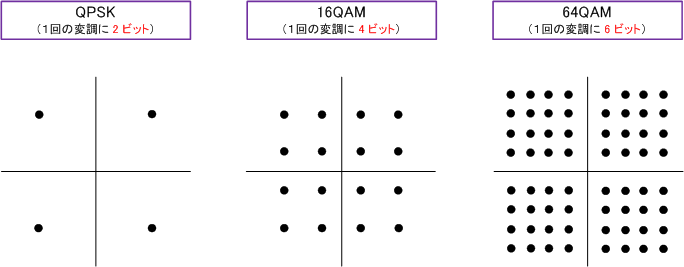
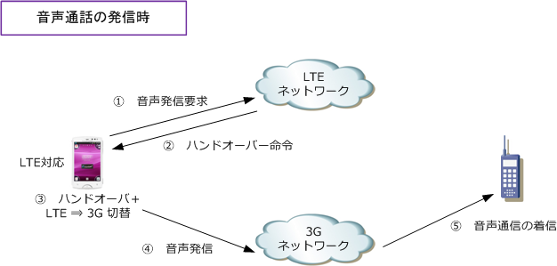
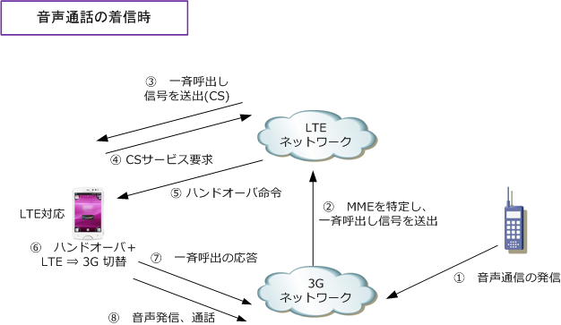

LTE
LTEとは
LTE（Long Term Evolution）は第3世代（3G）の拡張版（3.9G）でありデータ通信を高速化した規格です。 LTEは3.9Gの携帯電話の通信規格であり理論上の最大受信速度は「326Mbps」送信速度は「86Mbps」です。

ちなみに、4G技術（ LTE-Advanced または WiMAX2) に対応したスマートフォンではないのにも関わらず、 「4G対応」としてスマートフォンが販売されていますが、これはITUが3.9Gに相当する「LTE」「WiMAX」 そして3.5Gに相当する「HSPA+」については「4Gと呼称してよい」とする声明を発表したことに起因します。
各キャリアのLTE - サービス名と通信速度
各キャリアが提供するLTEサービスにおける理論上の最大通信速度です。iPhone5の発売を機にすべての キャリアのLTEサービスが揃いました。LTEサービス名はキャリアごとに異なりますが、LTEの技術仕様は 同じなので、理論上の通信速度は同じとなります。品質とカバーエリアについてはNTTドコモが現在No.1。
| キャリア | LTEのサービス名 | 通信速度 | LTE方式 |
|---|---|---|---|
| NTTドコモ | Xi | 下り 75Mbps / 上り 25Mbps | FDD-LTE |
| KDDI au | 4G LTE | 下り 75Mbps / 上り 25Mbps | FDD-LTE |
| ソフトバンクモバイル | SoftBank 4G LTE | 下り 75Mbps / 上り 25Mbps | FDD-LTE |
※ TD-LTE ： 上りと下りとで同じ周波数を時分割して送受信するTDD ( Time Division Duplex ) 方式のLTE。 ※ FDD-LTE ： 上りと下りとで異なる周波数を利用して送受信するFDD ( Frequency Division Duplex ) 方式のLTE。
ソフトバンクが「Softbank 4G LTE」ではなくて「Softbank 4G」という名称で提供しているサービスは XGP規格を改良したAXGPによる通信サービスです。AXGPによる通信サービスとは、AXGP規格の要件を 満たした仕様の１つのTD-LTEによる通信サービスです。一方、Softbank 4G LTEは上表通りFDD-LTEです。
LTE - プラチナバンドとは
LTEにおけるプラチナバンドとは、移動体通信用に割り当てられた周波数帯のうち700MHz～900MHz帯を 指しています。NTTドコモ、KDDI au、ソフトバンクモバイルには、以下のように割り当てられています。
| キャリア | バンド | 周波数帯 | 利用可能日 |
|---|---|---|---|
| NTTドコモ | 19 | 800MHz | 現在、利用可 |
| KDDI au | 18 | 800MHz | 現在、利用可 |
| ソフトバンク | 8 | 900MHz | 現在、利用可 |
なぜ700MHz～900MHz帯の周波数帯をプラチナバンドと言うかというと、携帯電話向けの電波のなかでも 700～900MHz帯の周波数帯は、他の周波数帯より電波が建物を回り込みやすく電波が届きやすいからです。 従って、iPhone5s 以降のLTEデータ通信や、それを利用したテザリング通信はかなり快適になっています。
フルLTE - NTTドコモのLTE設計
2014年度以降、NTTドコモでは周波数帯によって以下のLTE通信速度を実現しています。
| 周波数帯 | LTE | 最高スループット |
|---|---|---|
| 1.7 GHHz | フルLTE | 150Mbps |
| 1.5 GHz | フルLTE | 112.5Mbps |
| 2 GHz | LTEと3Gの混在 | 112.5Mbps |
| 800 MHz | LTEと3Gの混在 | 75Mbps |
LTE-Advanced （NTTドコモにおけるキャリアアグリゲーション）
NTTドコモでは4つの周波数のベストフォーメーションを活かして、以下の組み合わせで225Mbpsを実現。

LTE - ネットワーク構成
HSPAネットワークでは、データ通信はパケット交換網で処理され音声通信は回線交換網で処理されています。 LTEネットワークは最終的に（現在は過渡期）、右図のようにパケット交換網だけでデータ通信と音声通信を 処理できるネットワーク構成となり全てがIP化されていきます。つまり音声もVoIPで伝送される事になります。 下図のようなシンプルな構成により伝送遅延も大幅に抑えられて、LTEの伝送遅延(5msec以内)を実現します。 ※ 無線電波を送受信するNECのeNondeB、マルチメディアプラットフォームのCisco ASR 5000の組み合わせなら下図構成を実現。

最終的には従来の回線交換（CS：Circuit Switched）をなくして、CSで提供していた音声やSMSはVoIPに 置き換えられ（SIPを使用）、このための制御基盤となるIMS(IP Multimedia Subsystem)導入が必要です。
LTEのコアネットワークといっても、この先かなりの間は「3GPP/3GPP2」のアクセス網は残ることになり、 無線LAN、WiMAXなどの無線アクセスを収容する共通のコアネットワーク（下図のような構成）となります。

LTEの特徴
3.9GであるLTEには大きく5つの特徴があります。3.5GのHSPAと比較しながらその特徴を見ていきます。
| 比較項目 | LTE | HSPA |
|---|---|---|
| 1、最大通信速度 | 下り ： 326Mbps / 上り ： 86Mbps | 下り ： 14.4Mbps / 上り ： 5.76Mbps |
| 2、遅延時間の目標 | 接続遅延：100msec /伝送遅延：5msec | 目標値なし |
| 3、通信方式 | パケット方式のみ | 回線交換方式（音声用） / パケット方式（データ用） |
| 4、周波数利用効率 | 下り ： 3倍 / 上り ： 2倍 | 下り ： 1倍 / 上り ： 1倍 |
| 5、周波数帯域幅 | 1.4 /3 / 5 /10 /15 / 20MHz（可変） | 5MHz（固定） |
1、最大通信速度は大幅に高速化されています。ただし、理論上の最大通信速度であるという点と、キャリア によって使用する週数帯域幅などのポリシーが異なるので、ここまでの通信速度は実測として得られません。 ※ 326Mbpsを出すためには「4×4MIMO」「周波数20MHz」「端末カテゴリー5」の3条件が必要となります。
2、「接続遅延」とは、通信開始のためのコネクションの確立にかかる時間。現在は数秒以上かかっています。 「伝送遅延」は通信中のデータ伝送にかかる時間。LTEではこれらを上の値を目標値として定められています。
3、HSPAでは、音声通話用の「回線交換方式」とデータ通信用の「パケット方式」の両方を提供していました。 LTEでは音声もデータもパケット方式で提供されます。音声通話はVoIPによってパケット化を実現しています。
4、LTEでは、周波数利用効率が向上しており、下りのデータ通信量がHSPAに比べて3倍に増えた場合でも 同じ周波数幅/同じセクタで今まで同様のユーザ数を収容できます。1つの基地局で収容できるキャパの増加。
5、LTEでは、利用する周波数帯域幅を「1.4MHz、3MHz、5MHz、10MHz、15MHz、20MHz」の中から自由 に選択できます。これによりキャリアは段階的な導入や柔軟な導入を実現できます。周波数帯域幅は、大きな 値であるほど、通信を高速化できます。つまり、5MHzと20MHzとでは20MHzの周波数帯域幅の方が高速通信。
LTE - 高速化の3つの理由
1、利用周波数帯域が3Gでは最大で「5MHz」でしたが、LTEでは最大「20MHz」を使用することができます。 2、LTEでは複数のアンテナを使用してデータを同時伝送可能な技術の「MIMO」を採用「最大4×4」します。 3、LTEでは変調方式に「下りはOFDMA、上りはSC-FDMA」をベースに「QPSK、16QAM、64QAM」を採用。
変調とはデジタル信号を電波として送信できるように信号を変換することですが、1回の変調（1シンボル）で 多くの情報量を送ることができれば通信速度が速くなります。QPSKでは、1シンボルで2ビット（2の2乗=4） の信号を送信でき、16QAMでは4ビット（2の4乗=16）64QAMでは6ビット(2の6乗=64）の信号を送信可能。

例えば、HSPAの場合「QPSKと16QAM」しかサポートされていないので、OFDMをベースにした「16QAM」 の変調方式のHSPAに比べて、OFDMAをベースにした「64QAM」の変調方式のLTEは4倍の情報量を伝送可能。 ※ LTEでは基地局とLTE端末の距離やLTE端末の電力制約に応じて「QPSK / 16QAM / 64QAM」の変調方式を自動的に切り替え。
LTE - カテゴリー
LTEにおける通信速度は、基地局の設備や制御だけでなく、クライアントが使用する無線端末側のカテゴリー と呼ばれる実装技術と伝送速度を組み合わせた基準により変わります。カテゴリーには以下の5種類がある。 例えば基地局側で300Mbps以上の伝送速度をサポートとしていても、使用する無線デバイスのカテゴリーが 「3」である場合、その無線デバイスを使用したLTE通信は100Mbpsに通信速度が制限されることになります。
【 LTEカテゴリー表 】
| 項目 | カテゴリー 1 | カテゴリー 2 | カテゴリー 3 | カテゴリー 4 | カテゴリー 5 | |
|---|---|---|---|---|---|---|
| 最大通信速度 | 下り | 10Mbps | 50Mbps | 100Mbps | 150Mbps | 300Mbps |
| 最大通信速度 | 上り | 5Mbps | 25Mbps | 50Mbps | 50Mbps | 75Mbps |
| 利用周波数幅 | 20MHz | |||||
| 変調方式 | 下り OFDMA |
QPSK、16QAM、64QAM | ||||
| 変調方式 | 上り SC-FDMA |
QPSK、16QAM | QPSK、16QAM、64QAM | |||
| 2ダイバーシティ受信 | 必要に応じて利用 | |||||
| 2×2 MIMO | サポートなし | 必須 | ||||
| 4×4 MIMO | サポートなし | 必須 |
| 利用周波数幅 | 5MHz | 10MHz | 15MHz | 20MHz |
|---|---|---|---|---|
| カテゴリー1 | 10Mbps | 10Mbps | 10Mbps | 10Mbps |
| カテゴリー2 | 37.5Mbps | 50Mbps | 50Mbps | 50Mbps |
| カテゴリー3 | 37.5Mbps | 75Mbps | 100Mbps | 100Mbps |
| カテゴリー4 | 37.5Mbps | 75Mbps | 112.5Mbps | 150Mbps |
| カテゴリー5 | 75Mbps | 75Mbps | 225Mbps | 300Mbps |
LTE - ETWS（Earthquake and Tsunami Warning System）とは
ETWSはLTEの標準規格の1つであり、地震・津波などの災害発生時にスマホ利用者に「大きな音と画面上の メッセージ」によって、緊急地震速報や避難情報が送信されます。ETWS対応スマホであれば、デフォルトで 受信できる状態になっています。海外製の格安スマホはETWSに対応していない機種もあるのでご注意下さい。
LTE - CS Fallbackとは
LTEネットワークにおいて音声通話を実現するためには、VoLTE（Voice over LTE）の技術を使用します。 LTEではVoLTE対応の携帯電話（スマートフォン）である場合、音声通信もパケットとして転送されますが、 現在ではデータ通信のみLTEで通信を行い、音声通信は3Gで通信を行っています。LTEのサービスエリアが 3Gなみに広がりVoLTE対応の携帯電話が普及するまでは、過渡的なシステムとしてCS Fallbackがシステム として使用されます。CS Fallbackにより回線交換 = CS（Circuit Switched）を持たないLTEサービスでは、 音声通話時には3Gに自動的に切り替わり音声通話は3Gに任せることになります。仕組みは下図の通りです。
◇ 音声通話の発信時 ① 音声発信時は、LTEコアネットワークのMME (Mobility Management Entity) に発信要求を送信します。 ② MMEはLTE端末にハンドオーバー命令を出します。 ③ LTE端末は、無線をLTEから3Gへと切り替えます。 ④ LTE端末は3GコアネットワークのMSC/VLRに発信要求を行い、その後はSGSNに音声通信を伝送します。

◇ 音声通話の着信時 ① 音声着信時は、3GコアネットワークのMSC/VLRに着信信号が送られてきます。 ② 着信情報から対応するMMEを特定し一斉呼出し信号を送出します。 ③ CSサービスの呼出であることを示す情報を含めた上で、MMEからLTE端末に一斉呼出信号を送出します。 ④ この情報を識別したLTE端末は、MMEにたいしてCSサービス要求を送信します。 ⑤ ⑥ ハンドオーバー命令を受けたLTE端末は3Gへ切替を行います。 ⑦ LTE端末は、自分が登録されているMSC/VLRに一斉呼出し応答の信号を送信します。

現在はLTE移行への過渡期でありキャリアは3GとLTEの2つの基地局が必要になっています。これが3G並み の電波環境、VoLTEの完全普及でLTEネットワークのみに一本化できた場合はキャリアの設備投資や維持が 大幅に負担軽減となり現在のサービス料金からの引き下げや、通話料金の定額制などが期待されています。